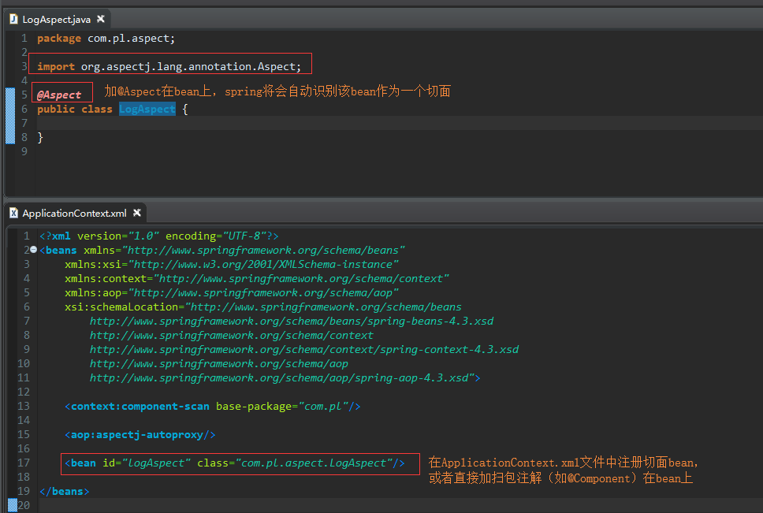
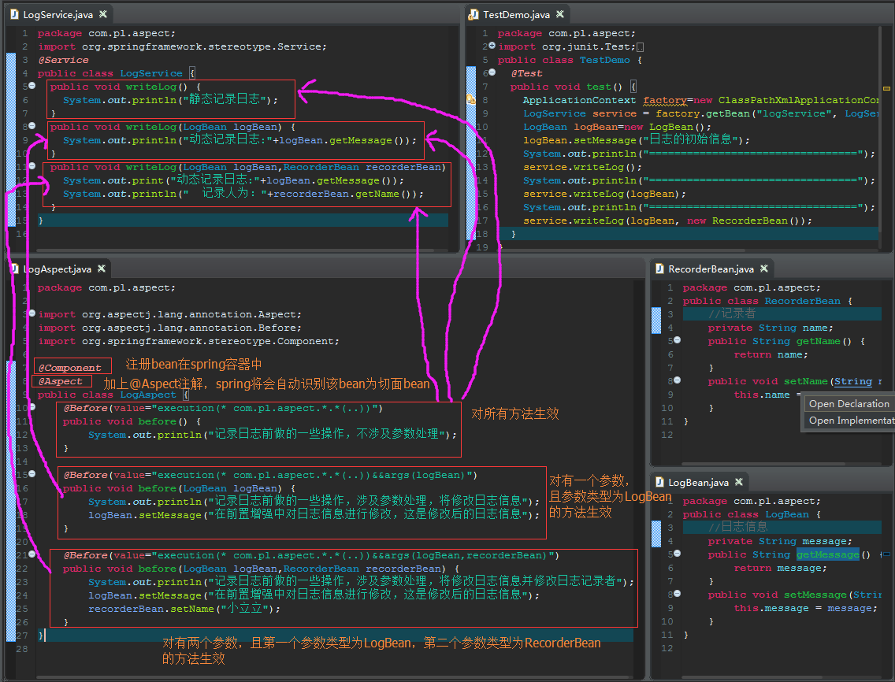
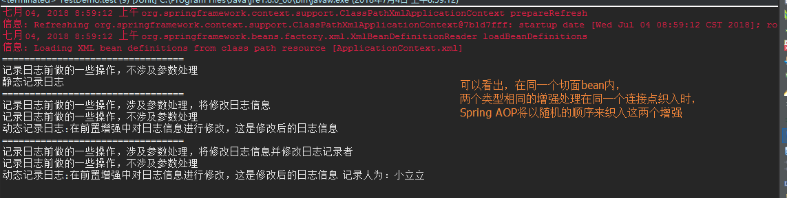
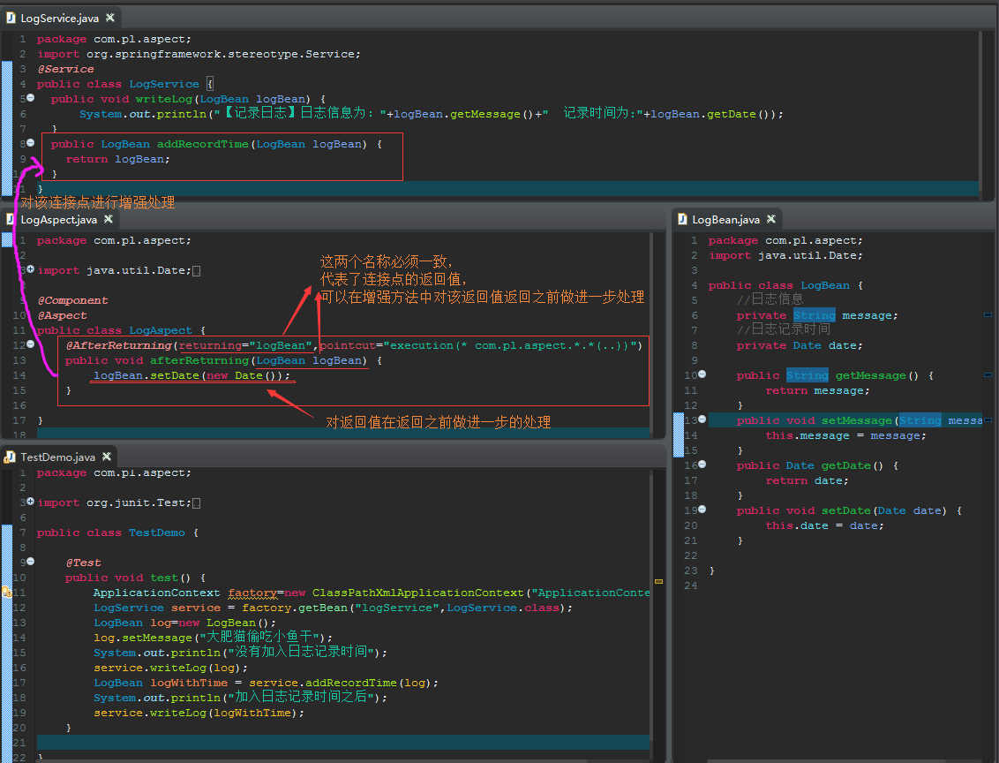
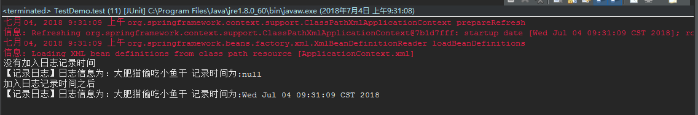

第一步：定义切面bean
当启动了@AspectJ支持后，只要在spring容器中配置一个带@Aspect注解的bean，spring将会自动识别该bean作为一个切面

第二步：定义增强处理
@Before增强
@Before增强是在被代理方法执行之前织入增强，注意一点的是，如果@Before增强处理没有经过特殊处理，则被代理方法总是会执行


@AfterReturning增强
@AfterReturning增强是在被代理方法执行之前织入增强


@AfterThrowing增强
@After增强
@Around增强
细节注意：